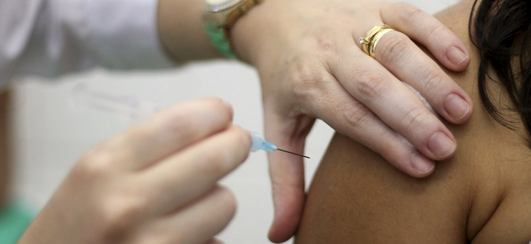

Instituto Federal do Paraná
Campus Paranaguá
COVID- 19
Foi publicada nesta quarta-feira (31) a portaria nº 277, que prorroga a suspensão das atividades administrativas presenciais no IFPR até o dia 30 de junho de 2021. A nova suspensão considera o comunicado nº 01 da Comissão de Acompanhamento e Controle de Propagação da covid-19 do IFPR, o Protocolo de Cuidados para a Prevenção da covid-19, dentre outros documentos e orientações das autoridades competentes. Fica mantida a recomendação à comunidade interna do IFPR para que seja preservado o distanciamento social e intensificada a prestação de informações relevantes no período de suspensão das atividades presenciais. Todas as informações sobre a suspensão de atividades, as ações da comissão e do IFPR no enfrentamento à pandemia podem ser encontradas na página IFPR Contra Covid-19..
Todas as aulas e encontros estão sendo feitos de forma ONLINE e sem prazo para retorno das aulas presenciais em todos os campus do Paranpa, a reitoria decidiu seguir a recomendação da Organização Mundial da saúde para assim manter protegedos todos os seus alunos, docentes e funcionários
O IFPR está presente nas cidades: Assis Chateaubriand, Campo Largo, Cascavel, Curitiba, Foz do Iguaçu, Irati, Ivaiporã, Jacarezinho, Londrina, Palmas, Paranaguá, Paranavaí, Telêmaco Borba, Umuarama.
Também está em fase de implantação nas cidades: Pinhais, Pitanga, União da Vitória, Jaguariaíva, Colombo, Capanema (3ª fase de ampliação da Rede Federal de Educação Profissional, Científica e Tecnológica).
Além dos campi, o IFPR está implantando as Unidades de Educação Profissional (UEP). São unidades especializadas na oferta de ensino técnico, cursos de formação inicial e continuada e de Educação a Distância, atendendo prioritariamente as ações que integram o Programa Nacional de Acesso ao Ensino Técnico e Emprego (Pronatec).
Vinculadas aos campi, as UEPs do IFPR estarão presentes em oito municípios: Astorga, Goioerê, Quedas do Iguaçu, Coronel Vivida, Barracão, Bandeirantes, Guaíra e Lapa.
Proteja-se

Desenvolvido por: Bill Gates